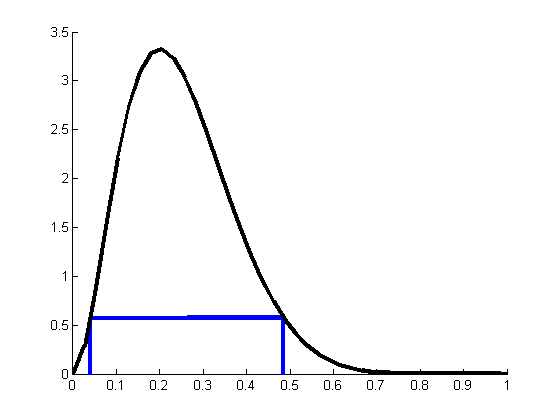

Plot CI and HPD for beta posterior
Requires Stats toolbox
%PMTKstats betainv model.a = 3; model.b = 9; alpha = 0.05; l = betainv(alpha/2, model.a, model.b); u = betainv(1-alpha/2, model.a, model.b); CI = [l,u] [styles, colors, symbols] = plotColors; xs = linspace(0.001, 0.999, 40); ps = exp(betaLogprob(model, xs)); figure; hold on HPD = [0.04, 0.485]; %ints = {CI, HPD}; ints = {HPD}; linestyles = {'-', ':'}; for i=1:length(ints) l = ints{i}(1); u = ints{i}(2); pl = exp(betaLogprob(model, l)); pu = exp(betaLogprob(model, u)); h=line([l l], [0 pl]); set(h, 'color', colors(i), 'linestyle', linestyles{i}, 'linewidth', 3); h = line([l u], [pl pu]); hh(i)=h; set(h, 'color', colors(i), 'linestyle', linestyles{i},'linewidth', 3); h=line([u u], [0 pu]); set(h, 'color', colors(i), 'linestyle', linestyles{i}, 'linewidth', 3); end %legend(hh, '95% CI', '95% HPD'); plot(xs , ps, 'k-', 'linewidth', 3); printPmtkFigure betaHPD; %printPmtkFigure betaCI;
CI =
0.0602 0.5178
